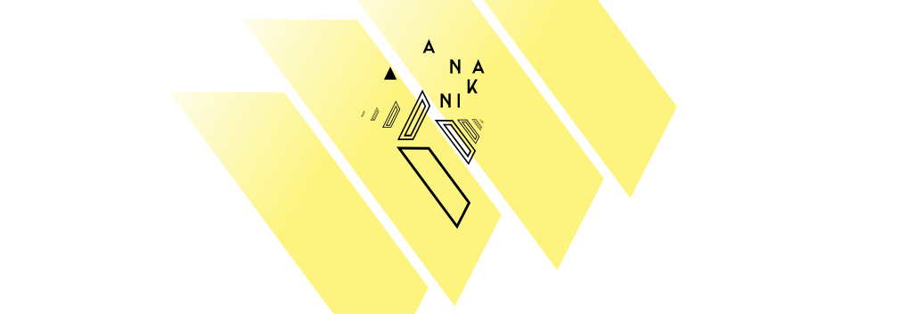
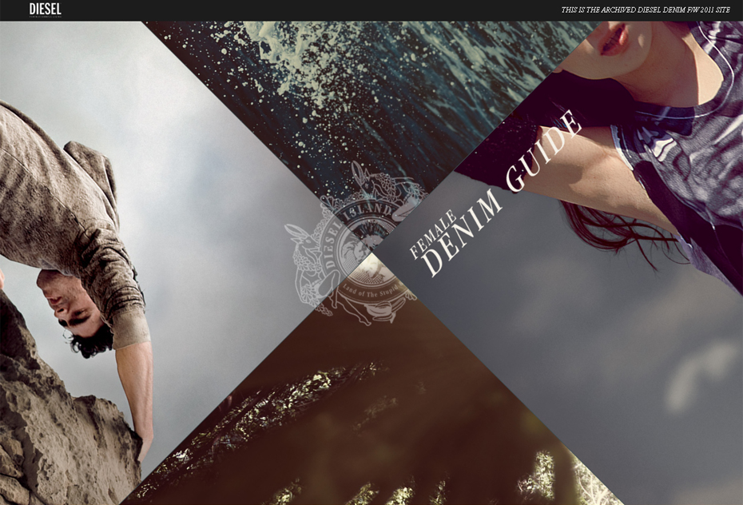
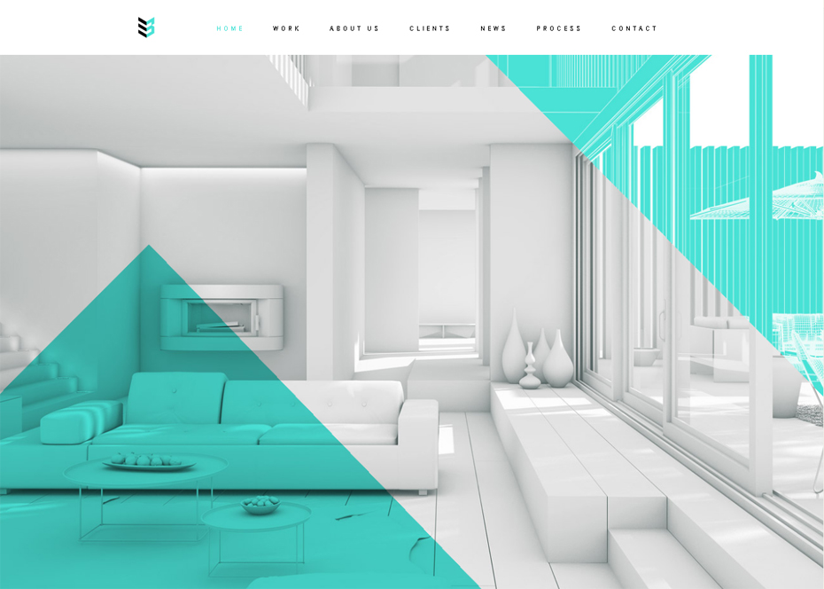

One of the most distinct web design trends of 2018 focuses on geometric themes, specifically polygons and layered shapes. Chances are you recognize this style when you see it, but to put a precise definition on it, a polygon is any closed-off shape with straight lines, typically 3-5 sides. This trend includes every floating triangle and square you see, but also original shapes that fit the definition.
https://www.anakin.co/
The style essentially centers around geometry, either with shapes (both regular and irregular) or basic geometric patterns (grids, planes).

https://shop.diesel.com/

https://www.case-3d.com/projects/